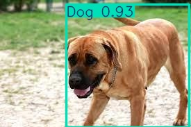
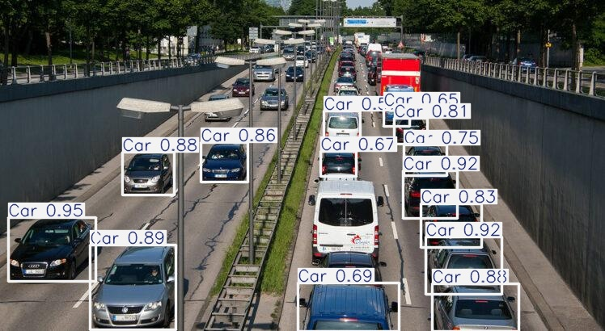
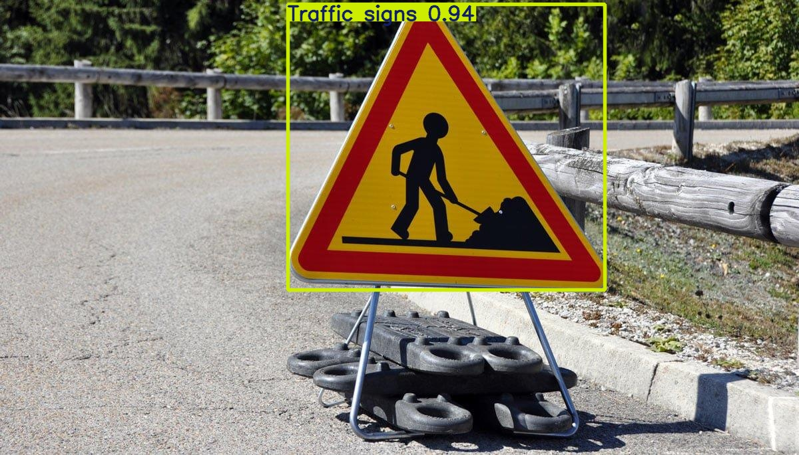
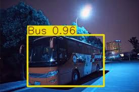
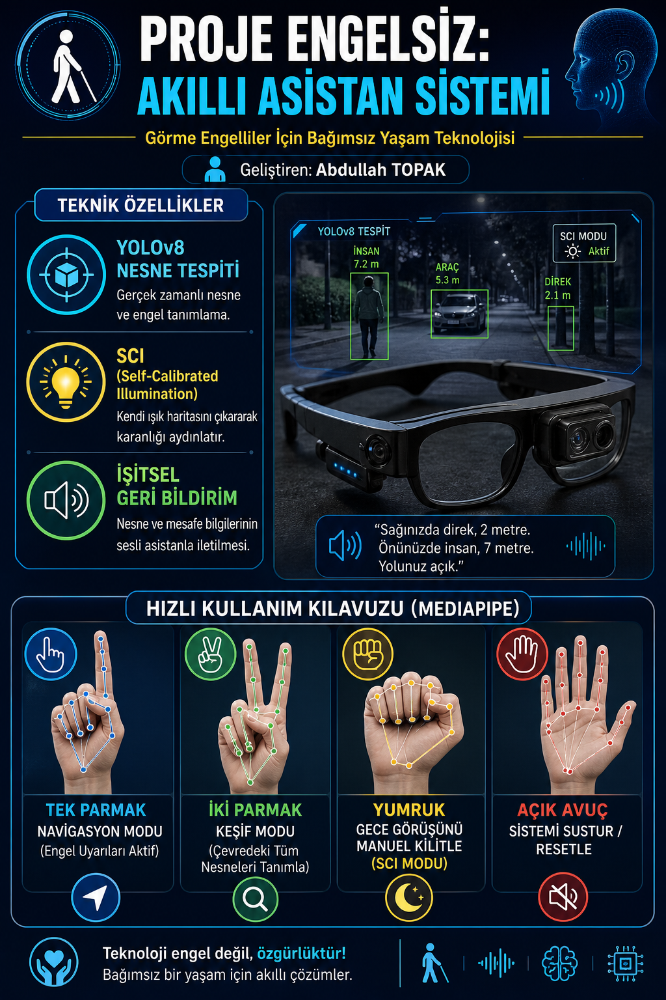

AKILLI ASİSTAN SİSTEMİ
Görme engelli bireyler için tasarlanmış bağımsız yaşam teknolojisi. Düşük ışıkta dahi nesne tespiti yapabilen ve sesli yönlendirme sağlayan asistan sistemi.
Çevredeki nesnelerin ve potansiyel engellerin yüksek doğrulukla, gerçek zamanlı olarak tanımlanması.
Kendi ışık haritasını çıkararak karanlığı aydınlatan hafif ve hızlı derin öğrenme mimarisi.
Kamera tarafından algılanan nesne ve mesafe bilgilerinin sesli asistan aracılığıyla iletilmesi.
El hareketlerini (jestleri) tanıyarak sistemin dokunmadan kontrol edilebilmesini sağlar.





Proje Tanıtım Afişi
Proje Engelsiz'in tüm kaynak kodlarını ve model ağırlıklarını GitHub üzerinden inceleyebilir, projeye katkıda bulunabilirsiniz.
GITHUB'DA GÖRÜNTÜLE